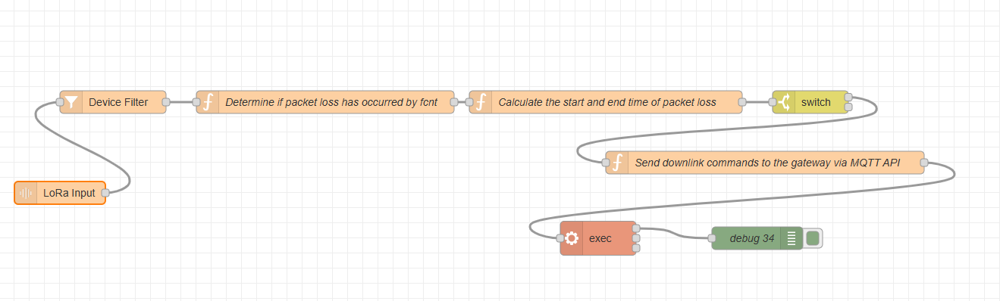
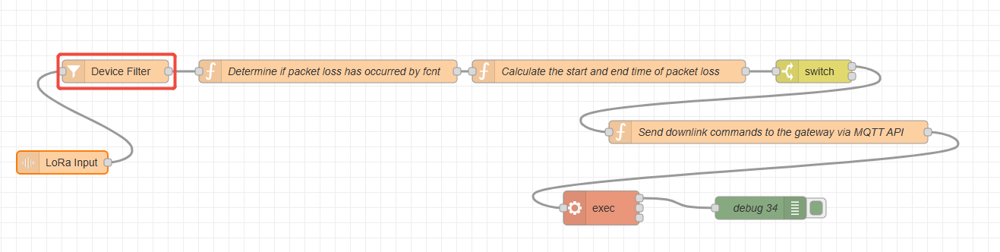
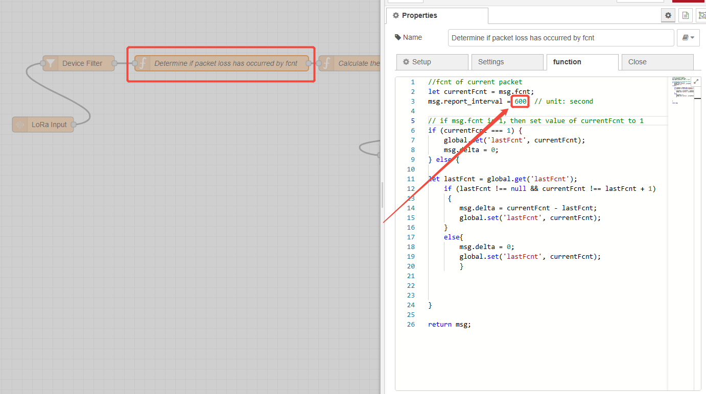
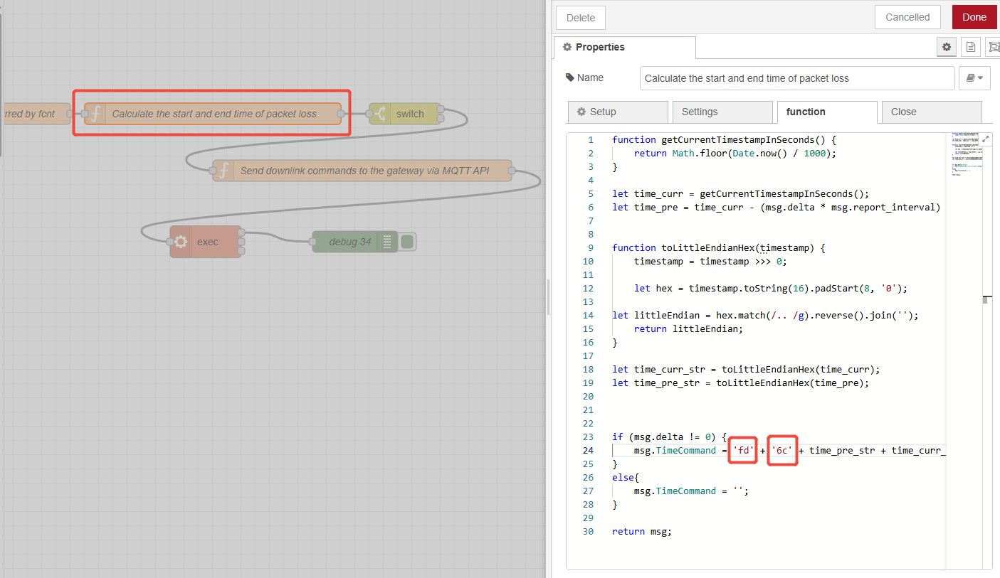
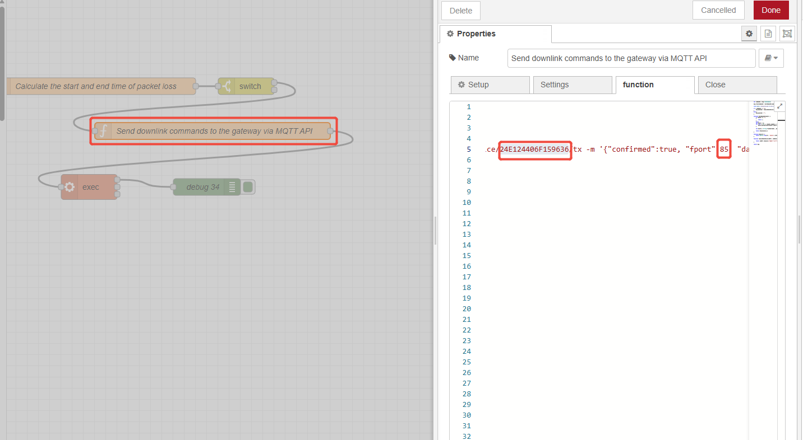
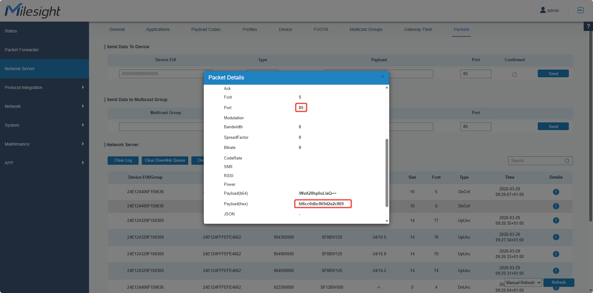

How to perform packet loss detection on a Milesight gateway using Node-Red
Howto perform packet loss detection on a Milesight gateway using Node-Red

| Version | Update Time | Description | Author |
| 1.0 | March 29, 2026 | Initial version | Charles |
Description
For LoRaWAN sensors deployed in harsh environments or located far from the gateway, users may observe data packet loss issues on the built-in Network Server (NS) of the Milesight gateway. This article will guide you on how to use Node-Red on the Milesight gateway to automatically query missing data when data packet loss occurs with LoRaWAN sensors.
Requirement
Milesight Gateway: UG56/UG65/UG67
LoRaWAN sensors that support querying historical data (using the Milesight EM300-DI as an example in this article)
Configuration
Step 1: Launch Node-RED and Import Flow Example
Go to App > Node-RED page to enable Node-RED program and wait for a while to load the program, click Launch button to start Node-RED web GUI.

Log in the Node-RED web GUI. The account information is the same as gateway web GUI.

Click Import to import the node-red flow example by pasting the content or import the json format file.


Step 2: Node-RED Configuration
Flow structure:

Content:
| [{"id":"0a23a4bad264d016","type":"tab","label":"流程 2","disabled":false,"info":"","env":[]},{"id":"b164bea6d2d69162","type":"LoRa Input","z":"0a23a4bad264d016","name":"","devEUI":"","extendedField":"","x":100,"y":280,"wires":[["8ac40f82287e4964"]]},{"id":"692875f151b94a97","type":"function","z":"0a23a4bad264d016","name":"Determine if packet loss has occurred by fcnt","func":"//fcnt of current packet/nlet currentFcnt = msg.fcnt;/nmsg.report_interval = 600; // unit: second/n/n// if msg.fcnt is 1，then set value of currentFcnt to 1/nif (currentFcnt === 1) {/n global.set('lastFcnt', currentFcnt);/n msg.delta = 0;/n} else {/n /n let lastFcnt = global.get('lastFcnt');/n if (lastFcnt !== null && currentFcnt !== lastFcnt + 1)/n {/n msg.delta = currentFcnt - lastFcnt;/n global.set('lastFcnt', currentFcnt);/n }/n else{/n msg.delta = 0;/n global.set('lastFcnt', currentFcnt);/n }/n /n/n/n}/n/nreturn msg;","outputs":1,"noerr":0,"initialize":"","finalize":"","libs":[],"x":450,"y":160,"wires":[["078b18b0da67e6a7"]]},{"id":"078b18b0da67e6a7","type":"function","z":"0a23a4bad264d016","name":"Calculate the start and end time of packet loss","func":"function getCurrentTimestampInSeconds() {/n return Math.floor(Date.now() / 1000);/n}/n/nlet time_curr = getCurrentTimestampInSeconds();/nlet time_pre = time_curr - (msg.delta * msg.report_interval) - 10;/n/n/nfunction toLittleEndianHex(timestamp) {/n timestamp = timestamp >>> 0; /n /n let hex = timestamp.toString(16).padStart(8, '0');/n /n let littleEndian = hex.match(/../g).reverse().join('');/n return littleEndian;/n}/n/nlet time_curr_str = toLittleEndianHex(time_curr);/nlet time_pre_str = toLittleEndianHex(time_pre);/n/n/n/nif (msg.delta != 0) {/n msg.TimeCommand = 'fd' + '6c' + time_pre_str + time_curr_str;/n}/nelse{/n msg.TimeCommand = '';/n}/n/nreturn msg;","outputs":1,"noerr":0,"initialize":"","finalize":"","libs":[],"x":820,"y":160,"wires":[["ecc8780116840790"]]},{"id":"d736e600c2a3ad28","type":"function","z":"0a23a4bad264d016","name":"Send downlink commands to the gateway via MQTT API","func":"var command1 = msg.TimeCommand;/n/nmsg.finalCommand2 = hexToBase64(command1)/n/nconst cmd = `mosquitto_pub -h 127.0.0.1 -p 1883 -u loraadm -P URloraadm123456 -t application/1/device/24E124406F159636/tx -m '{/"confirmed/":true, /"fport/":85, /"data/":/"CQEA/w==/"}'`;/n/nif ( command1 != /"/"){/n msg.payload = replaceDataValue(cmd, msg.finalCommand2);/n}/nelse {/n msg.payload = /"/";/n}/n/nfunction hexToBase64(hexStr) {/n if (hexStr == /"/")/n {/n return 1;/n }/n else{/n let bytes = [];/n for (let i = 0; i < hexStr.length; i += 2) {/n bytes.push(parseInt(hexStr.substr(i, 2), 16));/n }/n/n let binary = String.fromCharCode(...bytes);/n/n return btoa(binary);}/n}/n/nfunction btoa(str) {/n return Buffer.from(str, 'binary').toString('base64');/n}/n/nfunction replaceDataValue(cmdStr, newData) {/n/n return cmdStr.replace(/(/"data/":/")([^/"]*)(/")/, `//$1${newData}//$3`);/n}/n/nreturn msg","outputs":1,"noerr":0,"initialize":"","finalize":"","libs":[],"x":1030,"y":240,"wires":[["278826c596c9eea8"]]},{"id":"278826c596c9eea8","type":"exec","z":"0a23a4bad264d016","command":"exec","addpay":"payload","append":"","useSpawn":"false","timer":"","winHide":true,"oldrc":false,"name":"","x":810,"y":340,"wires":[["053976c3f29fd9c8"],[],[]]},{"id":"053976c3f29fd9c8","type":"debug","z":"0a23a4bad264d016","name":"debug 34","active":true,"tosidebar":true,"console":false,"tostatus":false,"complete":"false","statusVal":"","statusType":"auto","x":1020,"y":340,"wires":[]},{"id":"ecc8780116840790","type":"switch","z":"0a23a4bad264d016","name":"","property":"TimeCommand","propertyType":"msg","rules":[{"t":"nnull"},{"t":"null"}],"checkall":"true","repair":false,"outputs":2,"x":1090,"y":160,"wires":[["d736e600c2a3ad28"],[]]},{"id":"8ac40f82287e4964","type":"Device Filter","z":"0a23a4bad264d016","name":"","eui":"24E124406F159636","x":170,"y":160,"wires":[["692875f151b94a97"]]}] |
Step 3: Please ensure that your LoRaWAN sensor has enabled the historical data query function and refer to this article(https://support.milesight-iot.com/a/solutions/articles/73000514280) for instructions on connecting your sensor to the built-in Network Server (NS) of the Milesight gateway.
Step 4: Node-Red flow configuration
① Double-click the Device Filter node, then enter the Device EUI of your LoRaWAN sensor that has already been added to the built-in Network Server (NS) of the Milesight gateway.

② Double-click the Function node named "Determine if packet loss has occurred by fcnt", and modify msg.report_interval to the data reporting interval of your sensor, in seconds.

③ Since the historical data query command for the Milesight EM300-DI consists of "fd6c" plus the start time and end time, I double-clicked the Function node named "Calculate the start and end time of packet loss" and assigned the corresponding value to the msg.TimeCommand variable.

④Double-click the Function node named "Send downlink commands to the gateway via MQTT API", and fill in the device EUI in the MQTT topic with the device EUI of your LoRaWAN sensor, and set the fport to the port number your LoRaWAN sensor uses to receive LoRaWAN commands.

Step 5: Deploy and Check Result

Step 6: Double-click the Function node named "Send downlink commands to the gateway via MQTT API", and fill in the device EUI in the MQTT topic with the device EUI of your LoRaWAN sensor, and set the fport to the port number your LoRaWAN sensor uses to receive LoRaWAN commands.

-------END-----